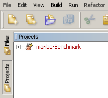
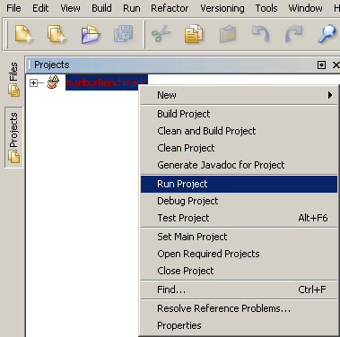

This section walks through the procedure of importing an Eclipse project while ignoring project dependencies.
To initiate an import of an Eclipse project, ignoring any project dependencies that may exist, select the File > Import Project > Eclipse Project menu in the NetBeans IDE. This will display the Import Eclipse Project wizard. From the Import Eclipse Project wizard, select the option Import Project Ignoring Project Dependencies and specify the Eclipse project to import and the destination folder. An example is shown below.
After specifying the Eclipse project to import and the destination folder, press Finish
The NetBeans Eclipse Project Importer is rather sophisticated in its processing of Eclipse projects. For instance, if the NetBeans Eclipse Project Importer discovers Eclipse project discrepancies while processing the Eclipse project information and believes it can resolve those discrepancies, NetBeans will display a dialog showing the Eclipse project discrepancies it has found and the corrective actions NetBeans has taken to handle those Eclipse project discrepancies. If you see this dialog, there is no additional work required by you. The dialog is meant to be an informative dialog to let you know the NetBeans Eclipse Project Importer has found discreprancies in the Eclipse project NetBeans is importing. For more information see Handling Eclipse Project Discrepancies.
If the NetBeans Eclipse Project Importer discovers problems in an Eclipse project such as a project resource that could not be found, NetBeans will display a Reference Problems warning dialog along with appropriate actions for you to take to resolve these Eclipse project references once the project has been imported into NetBeans. This dialog is presented to the user so that he or she may correct problems that have been detected in the Eclipse project while the NetBeans Eclipse Project Importer was processing the Eclipse project information. See Handling Eclipse Project Reference Problems for additional information.
If there were no Eclipse project reference problems discovered by NetBeans during the Eclipse project import which require a resolution, you may begin using the NetBeans IDE on your old Eclipse projects you have just imported. For instance, you can immediately use the NetBeans IDE Project Viewer to traverse the imported project or you can begin running your newly imported Eclipse project.
Once NetBeans has completed the Eclipse project import, you view the imported project in NetBeans by opening the Projects window.

Once you have imported your Eclipse project you can run it in NetBeans by opening the NetBeans Projects window, right clicking on the project and selecting Run as shown below.

That's it! As you can see, migrating Eclipse projects to
NetBeans is very easy with the NetBeans Eclipse Project Importer.